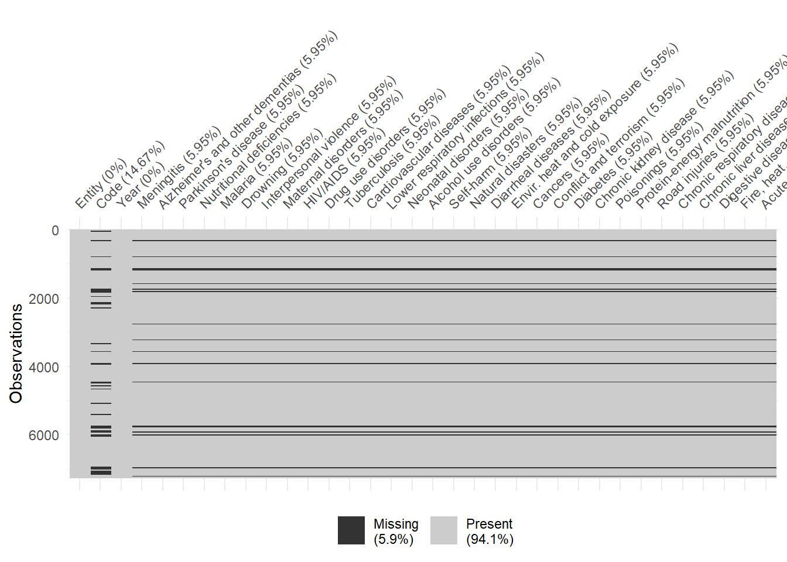
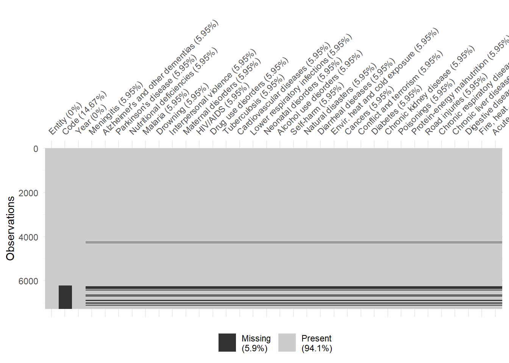
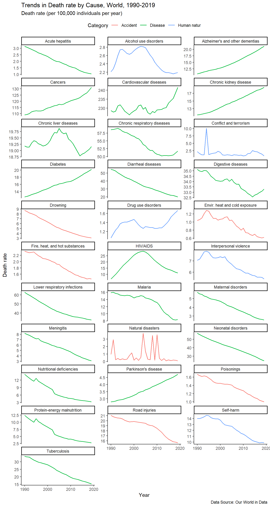
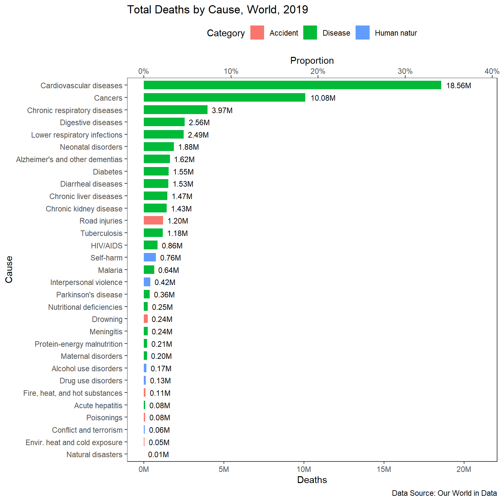
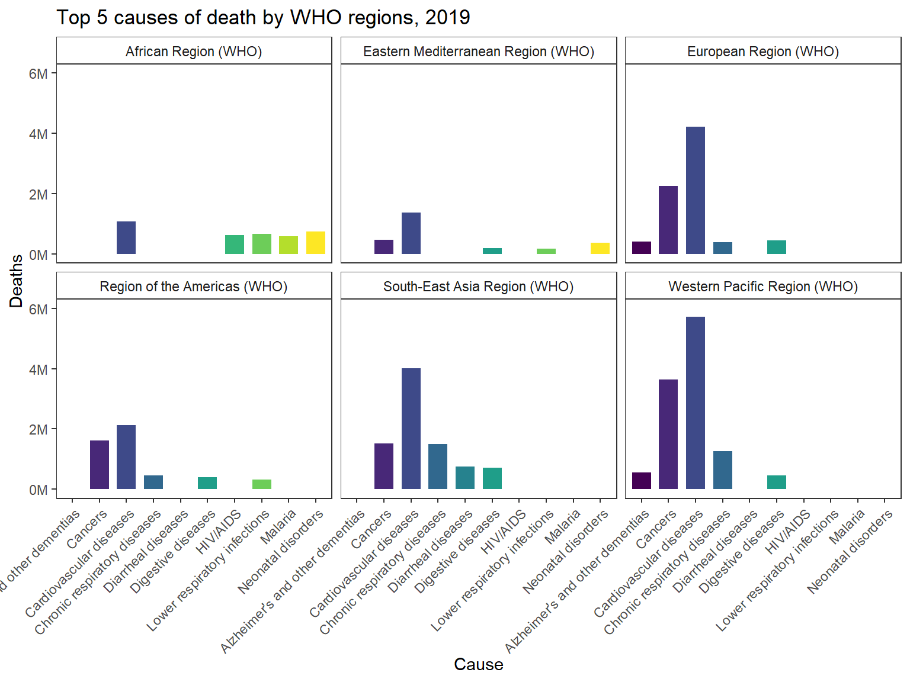
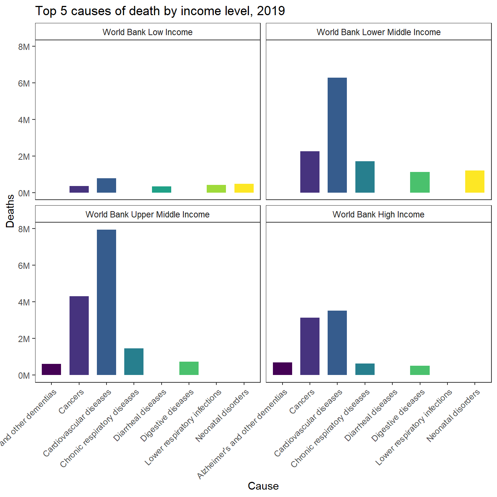

library(tidyverse)
library(visdat)Introduction
56 million people died in 2019. What did they die from?
The Global Burden of Disease is a major global study on the causes of death and disease published in the medical journal The Lancet. These estimates of the annual number of deaths by cause are shown here.
In the epidemiological framework of the Global Burden of Disease study each death has one specific cause. In their own words: “each death is attributed to a single underlying cause — the cause that initiated the series of events leading to death”.
About the Global Burden of Disease
The GBD study offers a powerful resource to understand the changing health challenges facing people across the world in the 21st century. Led by the Institute for Health Metrics and Evaluation (IHME), the GBD study is the most comprehensive worldwide observational epidemiological study to date. By tracking progress within and between countries GBD provides an important tool to inform clinicians, researchers, and policy makers, promote accountability, and improve lives worldwide.
Data
You can download the data on Number of deaths by cause from 1990 to 2019 from here Our World in Data or from the original source IHME, Global Burden of Disease.
🧹 Data cleaning and manipulation
Setting up the programming environment
Reading the data
deaths <- read_csv("data/annual-number-of-deaths-by-cause.csv")
glimpse(deaths)Rows: 7,273
Columns: 36
$ Entity <chr> …
$ Code <chr> …
$ Year <dbl> …
$ `Number of executions (Amnesty International)` <chr> …
$ `Deaths - Meningitis - Sex: Both - Age: All Ages (Number)` <dbl> …
$ `Deaths - Alzheimer's disease and other dementias - Sex: Both - Age: All Ages (Number)` <dbl> …
$ `Deaths - Parkinson's disease - Sex: Both - Age: All Ages (Number)` <dbl> …
$ `Deaths - Nutritional deficiencies - Sex: Both - Age: All Ages (Number)` <dbl> …
$ `Deaths - Malaria - Sex: Both - Age: All Ages (Number)` <dbl> …
$ `Deaths - Drowning - Sex: Both - Age: All Ages (Number)` <dbl> …
$ `Deaths - Interpersonal violence - Sex: Both - Age: All Ages (Number)` <dbl> …
$ `Deaths - Maternal disorders - Sex: Both - Age: All Ages (Number)` <dbl> …
$ `Deaths - HIV/AIDS - Sex: Both - Age: All Ages (Number)` <dbl> …
$ `Deaths - Drug use disorders - Sex: Both - Age: All Ages (Number)` <dbl> …
$ `Deaths - Tuberculosis - Sex: Both - Age: All Ages (Number)` <dbl> …
$ `Deaths - Cardiovascular diseases - Sex: Both - Age: All Ages (Number)` <dbl> …
$ `Deaths - Lower respiratory infections - Sex: Both - Age: All Ages (Number)` <dbl> …
$ `Deaths - Neonatal disorders - Sex: Both - Age: All Ages (Number)` <dbl> …
$ `Deaths - Alcohol use disorders - Sex: Both - Age: All Ages (Number)` <dbl> …
$ `Deaths - Self-harm - Sex: Both - Age: All Ages (Number)` <dbl> …
$ `Deaths - Exposure to forces of nature - Sex: Both - Age: All Ages (Number)` <dbl> …
$ `Deaths - Diarrheal diseases - Sex: Both - Age: All Ages (Number)` <dbl> …
$ `Deaths - Environmental heat and cold exposure - Sex: Both - Age: All Ages (Number)` <dbl> …
$ `Deaths - Neoplasms - Sex: Both - Age: All Ages (Number)` <dbl> …
$ `Deaths - Conflict and terrorism - Sex: Both - Age: All Ages (Number)` <dbl> …
$ `Deaths - Diabetes mellitus - Sex: Both - Age: All Ages (Number)` <dbl> …
$ `Deaths - Chronic kidney disease - Sex: Both - Age: All Ages (Number)` <dbl> …
$ `Deaths - Poisonings - Sex: Both - Age: All Ages (Number)` <dbl> …
$ `Deaths - Protein-energy malnutrition - Sex: Both - Age: All Ages (Number)` <dbl> …
$ `Terrorism (deaths)` <dbl> …
$ `Deaths - Road injuries - Sex: Both - Age: All Ages (Number)` <dbl> …
$ `Deaths - Chronic respiratory diseases - Sex: Both - Age: All Ages (Number)` <dbl> …
$ `Deaths - Cirrhosis and other chronic liver diseases - Sex: Both - Age: All Ages (Number)` <dbl> …
$ `Deaths - Digestive diseases - Sex: Both - Age: All Ages (Number)` <dbl> …
$ `Deaths - Fire, heat, and hot substances - Sex: Both - Age: All Ages (Number)` <dbl> …
$ `Deaths - Acute hepatitis - Sex: Both - Age: All Ages (Number)` <dbl> …unique(deaths$`Number of executions (Amnesty International)`) [1] "15" "17" "0" "2" "14" "6" "1" NA "5"
[10] "3" "9" "4" "10" "470" ">1000" "22" "44" "317"
[19] "346" "388" "252" "360" "314" "369" "289" "977" "156"
[28] "33" "34" "120" "68" "129" "169" "61" "26" "88"
[37] "7" "8" "11" "18" ">1" "60" "30" "135" "36"
[46] "326" "87" "143" "102" "69" "27" "82" "79" "90"
[55] "158" "154" "25" "19" "21" "23" "42" "37" "52"
[64] "46" "43" "39" "35" "28" "20" "1248" "2390" "712"
[73] "521" "670" "680" "767" "603" "1626" "613" "13" "53"
[82] "41" Data wrangling
Keeping in mind that the data applies to both sexes and all ages, I will clean up the column names. I will also remove 2 columns which *seem** to be subsequently inserted into the dataser:
Number of executions (Amnesty International)- most countries don’t have death penalty and it’s of character data type (e.g., >1000)Terrorism (deaths)- there is already a columnDeaths - Conflict and terrorism - Sex: Both - Age: All Ages (Number)!
deaths_clean <- deaths %>%
select(-c('Number of executions (Amnesty International)', 'Terrorism (deaths)')) %>%
set_names(names(.) %>% str_remove_all("Deaths - | - Sex: Both - Age: All Ages \\(Number\\)"))
glimpse(deaths_clean)Rows: 7,273
Columns: 34
$ Entity <chr> "Afghanistan", "Afghanist…
$ Code <chr> "AFG", "AFG", "AFG", "AFG…
$ Year <dbl> 2007, 2008, 2009, 2011, 2…
$ Meningitis <dbl> 2933, 2731, 2460, 2327, 2…
$ `Alzheimer's disease and other dementias` <dbl> 1402, 1424, 1449, 1508, 1…
$ `Parkinson's disease` <dbl> 450, 455, 460, 473, 482, …
$ `Nutritional deficiencies` <dbl> 2488, 2277, 2040, 1846, 1…
$ Malaria <dbl> 393, 255, 239, 390, 94, 1…
$ Drowning <dbl> 2127, 1973, 1852, 1775, 1…
$ `Interpersonal violence` <dbl> 3657, 3785, 3874, 4170, 4…
$ `Maternal disorders` <dbl> 4990, 5020, 5013, 4857, 4…
$ `HIV/AIDS` <dbl> 148, 157, 167, 184, 191, …
$ `Drug use disorders` <dbl> 252, 261, 270, 292, 305, …
$ Tuberculosis <dbl> 4995, 4790, 4579, 4259, 4…
$ `Cardiovascular diseases` <dbl> 53962, 54051, 53964, 5434…
$ `Lower respiratory infections` <dbl> 27672, 25800, 24340, 2288…
$ `Neonatal disorders` <dbl> 23890, 23792, 23672, 2395…
$ `Alcohol use disorders` <dbl> 111, 114, 115, 120, 123, …
$ `Self-harm` <dbl> 1310, 1330, 1342, 1391, 1…
$ `Exposure to forces of nature` <dbl> 296, 1317, 101, 83, 333, …
$ `Diarrheal diseases` <dbl> 9320, 8275, 7359, 6412, 6…
$ `Environmental heat and cold exposure` <dbl> 57, 57, 57, 58, 103, 58, …
$ Neoplasms <dbl> 15925, 16148, 16383, 1709…
$ `Conflict and terrorism` <dbl> 8220, 6895, 7617, 9142, 1…
$ `Diabetes mellitus` <dbl> 3189, 3261, 3336, 3550, 3…
$ `Chronic kidney disease` <dbl> 4490, 4534, 4597, 4785, 4…
$ Poisonings <dbl> 513, 495, 483, 483, 482, …
$ `Protein-energy malnutrition` <dbl> 2439, 2231, 1998, 1805, 1…
$ `Road injuries` <dbl> 7425, 7355, 7290, 7432, 7…
$ `Chronic respiratory diseases` <dbl> 7222, 7143, 7045, 6916, 6…
$ `Cirrhosis and other chronic liver diseases` <dbl> 3346, 3316, 3291, 3318, 3…
$ `Digestive diseases` <dbl> 6458, 6408, 6358, 6370, 6…
$ `Fire, heat, and hot substances` <dbl> 481, 462, 448, 448, 445, …
$ `Acute hepatitis` <dbl> 3437, 3005, 2663, 2365, 2…Renaming certain columns for better readability and clarity.
deaths_clean <- deaths_clean %>%
rename("Alzheimer's and other dementias" = "Alzheimer's disease and other dementias",
"Chronic liver diseases" = "Cirrhosis and other chronic liver diseases",
"Diabetes" = "Diabetes mellitus",
"Envir. heat and cold exposure" = "Environmental heat and cold exposure",
"Natural disasters" = "Exposure to forces of nature",
"Cancers" = "Neoplasms")Visualizing missing values
deaths_clean %>% vis_miss()
deaths_clean %>% arrange(Code) %>% vis_miss()
What is an Entity and why each (every) entity** doesn’t have a Code?
Entities with missing Code
Show code and output
deaths_clean %>%
filter(is.na(Code)) %>%
pull(Entity) %>%
unique() [1] "African Region (WHO)" "Australasia & Oceania"
[3] "Bosnia-Herzegovina" "Central America & Caribbean"
[5] "Central Asia" "East Asia"
[7] "East Asia & Pacific (WB)" "East Germany (GDR)"
[9] "East Timor" "Eastern Europe"
[11] "Eastern Mediterranean Region (WHO)" "England"
[13] "Europe & Central Asia (WB)" "European Region (WHO)"
[15] "G20" "International"
[17] "Latin America & Caribbean (WB)" "Macau"
[19] "Middle East & North Africa" "Middle East & North Africa (WB)"
[21] "North America" "North America (WB)"
[23] "Northern Ireland" "OECD Countries"
[25] "Region of the Americas (WHO)" "Scotland"
[27] "Serbia-Montenegro" "South America"
[29] "South Asia" "South Asia (WB)"
[31] "South-East Asia Region (WHO)" "Southeast Asia"
[33] "Sub-Saharan Africa" "Sub-Saharan Africa (WB)"
[35] "Wales" "West Germany (FRG)"
[37] "Western Europe" "Western Pacific Region (WHO)"
[39] "World (excluding China)" "World Bank High Income"
[41] "World Bank Low Income" "World Bank Lower Middle Income"
[43] "World Bank Upper Middle Income" "Zaire" Entities without Code are aggregates. I am looking for the entity “World” and it’s not here!
Entities without missing Code
Show code and output
deaths_clean %>%
filter(!is.na(Code)) %>% # Be aware: "World" entity has a code!! It's here!
pull(Entity) %>%
unique() [1] "Afghanistan" "Albania"
[3] "Algeria" "American Samoa"
[5] "Andorra" "Angola"
[7] "Antigua and Barbuda" "Argentina"
[9] "Armenia" "Australia"
[11] "Austria" "Azerbaijan"
[13] "Bahamas" "Bahrain"
[15] "Bangladesh" "Barbados"
[17] "Belarus" "Belgium"
[19] "Belize" "Benin"
[21] "Bermuda" "Bhutan"
[23] "Bolivia" "Bosnia and Herzegovina"
[25] "Botswana" "Brazil"
[27] "Brunei" "Bulgaria"
[29] "Burkina Faso" "Burundi"
[31] "Cambodia" "Cameroon"
[33] "Canada" "Cape Verde"
[35] "Central African Republic" "Chad"
[37] "Chile" "China"
[39] "Colombia" "Comoros"
[41] "Congo" "Cook Islands"
[43] "Costa Rica" "Cote d'Ivoire"
[45] "Croatia" "Cuba"
[47] "Cyprus" "Czechia"
[49] "Czechoslovakia" "Democratic Republic of Congo"
[51] "Denmark" "Djibouti"
[53] "Dominica" "Dominican Republic"
[55] "Ecuador" "Egypt"
[57] "El Salvador" "Equatorial Guinea"
[59] "Eritrea" "Estonia"
[61] "Eswatini" "Ethiopia"
[63] "Fiji" "Finland"
[65] "France" "French Guiana"
[67] "French Polynesia" "Gabon"
[69] "Gambia" "Georgia"
[71] "Germany" "Ghana"
[73] "Greece" "Greenland"
[75] "Grenada" "Guadeloupe"
[77] "Guam" "Guatemala"
[79] "Guinea" "Guinea-Bissau"
[81] "Guyana" "Haiti"
[83] "Honduras" "Hong Kong"
[85] "Hungary" "Iceland"
[87] "India" "Indonesia"
[89] "Iran" "Iraq"
[91] "Ireland" "Israel"
[93] "Italy" "Jamaica"
[95] "Japan" "Jordan"
[97] "Kazakhstan" "Kenya"
[99] "Kiribati" "Kosovo"
[101] "Kuwait" "Kyrgyzstan"
[103] "Laos" "Latvia"
[105] "Lebanon" "Lesotho"
[107] "Liberia" "Libya"
[109] "Lithuania" "Luxembourg"
[111] "Madagascar" "Malawi"
[113] "Malaysia" "Maldives"
[115] "Mali" "Malta"
[117] "Marshall Islands" "Martinique"
[119] "Mauritania" "Mauritius"
[121] "Mexico" "Micronesia (country)"
[123] "Moldova" "Monaco"
[125] "Mongolia" "Montenegro"
[127] "Morocco" "Mozambique"
[129] "Myanmar" "Namibia"
[131] "Nauru" "Nepal"
[133] "Netherlands" "New Caledonia"
[135] "New Zealand" "Nicaragua"
[137] "Niger" "Nigeria"
[139] "Niue" "North Korea"
[141] "North Macedonia" "Northern Mariana Islands"
[143] "Norway" "Oman"
[145] "Pakistan" "Palau"
[147] "Palestine" "Panama"
[149] "Papua New Guinea" "Paraguay"
[151] "Peru" "Philippines"
[153] "Poland" "Portugal"
[155] "Puerto Rico" "Qatar"
[157] "Romania" "Russia"
[159] "Rwanda" "Saint Kitts and Nevis"
[161] "Saint Lucia" "Saint Vincent and the Grenadines"
[163] "Samoa" "San Marino"
[165] "Sao Tome and Principe" "Saudi Arabia"
[167] "Senegal" "Serbia"
[169] "Seychelles" "Sierra Leone"
[171] "Singapore" "Slovakia"
[173] "Slovenia" "Solomon Islands"
[175] "Somalia" "South Africa"
[177] "South Korea" "South Sudan"
[179] "Spain" "Sri Lanka"
[181] "Sudan" "Suriname"
[183] "Sweden" "Switzerland"
[185] "Syria" "Taiwan"
[187] "Tajikistan" "Tanzania"
[189] "Thailand" "Timor"
[191] "Togo" "Tokelau"
[193] "Tonga" "Trinidad and Tobago"
[195] "Tunisia" "Turkey"
[197] "Turkmenistan" "Tuvalu"
[199] "USSR" "Uganda"
[201] "Ukraine" "United Arab Emirates"
[203] "United Kingdom" "United States"
[205] "United States Virgin Islands" "Uruguay"
[207] "Uzbekistan" "Vanuatu"
[209] "Venezuela" "Vietnam"
[211] "Wallis and Futuna" "Western Sahara"
[213] "World" "Yemen"
[215] "Yugoslavia" "Zambia"
[217] "Zimbabwe" We have countries here. This subset also includes “World”. Be careful to filter out “World” entity if you explore countries!
Some rows have Code but missing data on all Deaths.
deaths_clean %>%
filter(!is.na(Code), is.na(Cancers)) %>% pull(Entity) %>% unique() [1] "Czechoslovakia" "French Guiana" "French Polynesia"
[4] "Guadeloupe" "Hong Kong" "Kosovo"
[7] "Martinique" "New Caledonia" "USSR"
[10] "Wallis and Futuna" "Western Sahara" "Yugoslavia" Some entities doesn’t exist anymore. I’ll leave it as it is.
Defining cause of death categories
disease <- c("Acute hepatitis",
"Alzheimer's and other dementias",
"Cancers",
"Cardiovascular diseases",
"Chronic kidney disease",
"Chronic respiratory diseases",
"Chronic liver diseases",
"Diabetes",
"Diarrheal diseases",
"Digestive diseases",
"HIV/AIDS",
"Lower respiratory infections",
"Malaria",
"Maternal disorders",
"Meningitis",
"Neonatal disorders",
"Nutritional deficiencies",
"Parkinson's disease",
"Protein-energy malnutrition",
"Tuberculosis")
human_natur <- c("Alcohol use disorders",
"Conflict and terrorism",
"Drug use disorders",
"Interpersonal violence",
"Self-harm")
accident <- c("Drowning",
"Envir. heat and cold exposure",
"Fire, heat, and hot substances",
"Natural disasters",
"Poisonings",
"Road injuries")Some more data manipulation to get the dataset ready for analysis. (?)
deaths_clean <- deaths_clean %>%
pivot_longer(cols = -c(Entity, Code, Year), names_to = "Cause", values_to = "Deaths") %>%
mutate(Category = case_when(
Cause %in% disease ~ "Disease",
Cause %in% human_natur ~ "Human natur" ,
Cause %in% accident ~ "Accident" )) %>%
select(1:4, 6, 5)
deaths_clean # A tibble: 225,463 × 6
Entity Code Year Cause Category Deaths
<chr> <chr> <dbl> <chr> <chr> <dbl>
1 Afghanistan AFG 2007 Meningitis Disease 2933
2 Afghanistan AFG 2007 Alzheimer's and other dementias Disease 1402
3 Afghanistan AFG 2007 Parkinson's disease Disease 450
4 Afghanistan AFG 2007 Nutritional deficiencies Disease 2488
5 Afghanistan AFG 2007 Malaria Disease 393
6 Afghanistan AFG 2007 Drowning Accident 2127
7 Afghanistan AFG 2007 Interpersonal violence Human natur 3657
8 Afghanistan AFG 2007 Maternal disorders Disease 4990
9 Afghanistan AFG 2007 HIV/AIDS Disease 148
10 Afghanistan AFG 2007 Drug use disorders Human natur 252
# … with 225,453 more rows📊 Trends in Death rate by Cause, World, 1990-2019
Our metric for this visualization will be death rate per year, measured as the annual number of deaths per 100,000 individuals, Therefore, we need a dataset with world’s total populations from 1990 - 2019. It is obtained from The World Bank and prepared in Excel.
world_pop <- read_csv("data/world_pop_1990-2019.csv")
world_pop# A tibble: 30 × 3
Entity Year Population
<chr> <dbl> <dbl>
1 World 1990 5280062644
2 World 1991 5368139818
3 World 1992 5452576967
4 World 1993 5537885402
5 World 1994 5622085293
6 World 1995 5706753581
7 World 1996 5789655178
8 World 1997 5872284397
9 World 1998 5954004340
10 World 1999 6034484369
# … with 20 more rowsData manipulation
trends_world <- deaths_clean %>%
filter(Entity == "World") %>%
left_join(world_pop, by = c("Entity" = "Entity", "Year" = "Year")) %>%
mutate(`Death rate` = round(Deaths / Population * 1e+05, 2))
trends_world# A tibble: 930 × 8
Entity Code Year Cause Categ…¹ Deaths Popul…² Death…³
<chr> <chr> <dbl> <chr> <chr> <dbl> <dbl> <dbl>
1 World OWID_WRL 1990 Meningitis Disease 432524 5.28e9 8.19
2 World OWID_WRL 1990 Alzheimer's and other d… Disease 560935 5.28e9 10.6
3 World OWID_WRL 1990 Parkinson's disease Disease 147238 5.28e9 2.79
4 World OWID_WRL 1990 Nutritional deficiencies Disease 757152 5.28e9 14.3
5 World OWID_WRL 1990 Malaria Disease 840553 5.28e9 15.9
6 World OWID_WRL 1990 Drowning Accide… 460665 5.28e9 8.72
7 World OWID_WRL 1990 Interpersonal violence Human … 373124 5.28e9 7.07
8 World OWID_WRL 1990 Maternal disorders Disease 302586 5.28e9 5.73
9 World OWID_WRL 1990 HIV/AIDS Disease 336387 5.28e9 6.37
10 World OWID_WRL 1990 Drug use disorders Human … 56144 5.28e9 1.06
# … with 920 more rows, and abbreviated variable names ¹Category, ²Population,
# ³`Death rate`Data visualization
trends_world %>%
ggplot(aes(Year, `Death rate`, color = Category)) +
geom_line(size = 0.7) +
facet_wrap(~ Cause, scales = "free_y", ncol = 3) +
labs(title = "Trends in Death rate by Cause, World, 1990-2019",
subtitle = "Death rate (per 100,000 individuals per year)",
caption = "Data Source: Our World in Data") +
theme_classic() +
theme(legend.position = "top")
📊 Total Deaths by Cause, World, 2019
We will now see how many people died from a particular cause in 2019.
Our metric for this visualization will be number of deaths.
Data manipulation
world_2019 <- deaths_clean %>%
filter(Year == 2019 & Entity == "World") %>%
mutate(Percent = scales::percent(Deaths / sum(Deaths), accuracy = 0.1),
Cause = as_factor(Cause) %>% fct_reorder(Deaths)) %>%
arrange(desc(Deaths))
world_2019 %>%
mutate(Deaths = scales::comma(Deaths, scale = 1e-06, suffix = "M", accuracy = 0.01)) %>%
print(n=Inf)# A tibble: 31 × 7
Entity Code Year Cause Category Deaths Percent
<chr> <chr> <dbl> <fct> <chr> <chr> <chr>
1 World OWID_WRL 2019 Cardiovascular diseases Disease 18.56M 34.1%
2 World OWID_WRL 2019 Cancers Disease 10.08M 18.5%
3 World OWID_WRL 2019 Chronic respiratory diseases Disease 3.97M 7.3%
4 World OWID_WRL 2019 Digestive diseases Disease 2.56M 4.7%
5 World OWID_WRL 2019 Lower respiratory infections Disease 2.49M 4.6%
6 World OWID_WRL 2019 Neonatal disorders Disease 1.88M 3.5%
7 World OWID_WRL 2019 Alzheimer's and other dementias Disease 1.62M 3.0%
8 World OWID_WRL 2019 Diabetes Disease 1.55M 2.9%
9 World OWID_WRL 2019 Diarrheal diseases Disease 1.53M 2.8%
10 World OWID_WRL 2019 Chronic liver diseases Disease 1.47M 2.7%
11 World OWID_WRL 2019 Chronic kidney disease Disease 1.43M 2.6%
12 World OWID_WRL 2019 Road injuries Accident 1.20M 2.2%
13 World OWID_WRL 2019 Tuberculosis Disease 1.18M 2.2%
14 World OWID_WRL 2019 HIV/AIDS Disease 0.86M 1.6%
15 World OWID_WRL 2019 Self-harm Human n… 0.76M 1.4%
16 World OWID_WRL 2019 Malaria Disease 0.64M 1.2%
17 World OWID_WRL 2019 Interpersonal violence Human n… 0.42M 0.8%
18 World OWID_WRL 2019 Parkinson's disease Disease 0.36M 0.7%
19 World OWID_WRL 2019 Nutritional deficiencies Disease 0.25M 0.5%
20 World OWID_WRL 2019 Drowning Accident 0.24M 0.4%
21 World OWID_WRL 2019 Meningitis Disease 0.24M 0.4%
22 World OWID_WRL 2019 Protein-energy malnutrition Disease 0.21M 0.4%
23 World OWID_WRL 2019 Maternal disorders Disease 0.20M 0.4%
24 World OWID_WRL 2019 Alcohol use disorders Human n… 0.17M 0.3%
25 World OWID_WRL 2019 Drug use disorders Human n… 0.13M 0.2%
26 World OWID_WRL 2019 Fire, heat, and hot substances Accident 0.11M 0.2%
27 World OWID_WRL 2019 Acute hepatitis Disease 0.08M 0.1%
28 World OWID_WRL 2019 Poisonings Accident 0.08M 0.1%
29 World OWID_WRL 2019 Conflict and terrorism Human n… 0.06M 0.1%
30 World OWID_WRL 2019 Envir. heat and cold exposure Accident 0.05M 0.1%
31 World OWID_WRL 2019 Natural disasters Accident 0.01M 0.0% Data visualization
world_2019 %>%
ggplot(aes(Deaths, Cause, fill = Category)) +
geom_col(width = 0.7) +
geom_text(aes(label = scales::comma(Deaths, scale = 1e-06, suffix = "M", accuracy = 0.01),
hjust = -0.2), size = 3) +
scale_x_continuous(sec.axis = sec_axis(trans = ~./sum(world_2019$Deaths),
name="Proportion",
labels = scales::percent),
labels = scales::comma_format(scale = 1e-06, suffix = "M")) +
labs(title = "Total Deaths by Cause, World, 2019",
caption = "Data Source: Our World in Data") +
expand_limits(x = 2.1e+07) +
theme_bw() +
theme(legend.position = "top",
panel.grid.major = element_blank(),
panel.grid.minor = element_blank()) 
Key facts
Cardiovascular diseases are the leading cause of death globally. An estimated 18.6 million people died from CVDs in 2019, representing 34,1% of all global deaths. Of these deaths, 85% were due to heart attack and stroke. Over three quarters of CVD deaths take place in low- and middle-income countries. Most cardiovascular diseases can be prevented by addressing behavioural risk factors such as tobacco use, unhealthy diet and obesity, physical inactivity and harmful use of alcohol. (or nearly one in three deaths.)
(https://www.who.int/news-room/fact-sheets/detail/cardiovascular-diseases-(cvds))
The second biggest cause are cancers.
📊 Breakdown by WHO regions, 2019
Data manipulation
deaths_WHO_regions <- deaths_clean %>%
filter(str_detect(Entity, "\\(WHO\\)") & Year == 2019) %>%
select(-c(Code, Category)) %>%
group_by(Entity) %>%
arrange(Entity, desc(Deaths)) %>%
mutate(Rank = row_number()) %>%
filter(Rank <= 5)
DT::datatable(deaths_WHO_regions)Data visualization
deaths_WHO_regions %>%
ggplot(aes(Cause, Deaths, fill = Cause)) +
geom_col(width = 0.7) +
facet_wrap(~Entity) +
scale_fill_viridis_d() +
scale_y_continuous(labels = scales::comma_format(scale = 1e-06, suffix = "M")) +
expand_limits(y = 6e+06) +
labs(title = "Top 5 causes of death by WHO regions, 2019") +
theme_bw() +
theme(legend.position = "none",
panel.grid.major = element_blank(),
panel.grid.minor = element_blank(),
strip.background = element_rect(fill = "white"),
axis.text.x = element_text(angle = 45, hjust = 1))
📊 Breakdown by income level, 2019
Data manipulation
deaths_income_level <- deaths_clean %>%
filter(str_detect(Entity, "Income") & Year == 2019) %>%
select(-c(Code, Category)) %>%
mutate(Entity = Entity %>% as_factor() %>% fct_relevel("World Bank High Income", after = 3)) %>%
group_by(Entity) %>%
arrange(Entity, desc(Deaths)) %>%
mutate(Rank = row_number()) %>%
ungroup() %>%
filter(Rank <= 5)
DT::datatable(deaths_income_level)Data visualization
deaths_income_level %>%
ggplot(aes(Cause, Deaths, fill = Cause)) +
geom_col(width = 0.7) +
facet_wrap(~Entity) +
scale_fill_viridis_d() +
scale_y_continuous(labels = scales::comma_format(scale = 1e-06, suffix = "M")) +
labs(title = "Top 5 causes of death by income level, 2019") +
theme_bw() +
theme(legend.position = "none",
panel.grid.major = element_blank(),
panel.grid.minor = element_blank(),
strip.background = element_rect(fill = "white"),
axis.text.x = element_text(angle = 45, hjust = 1))